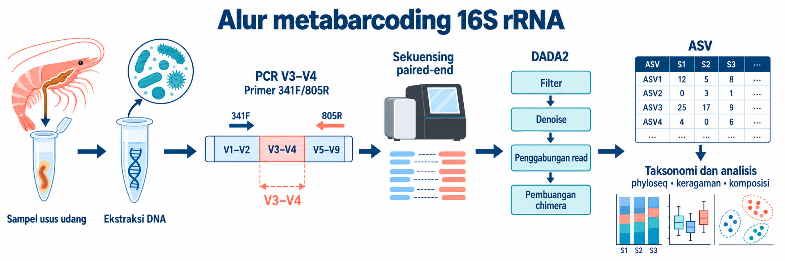
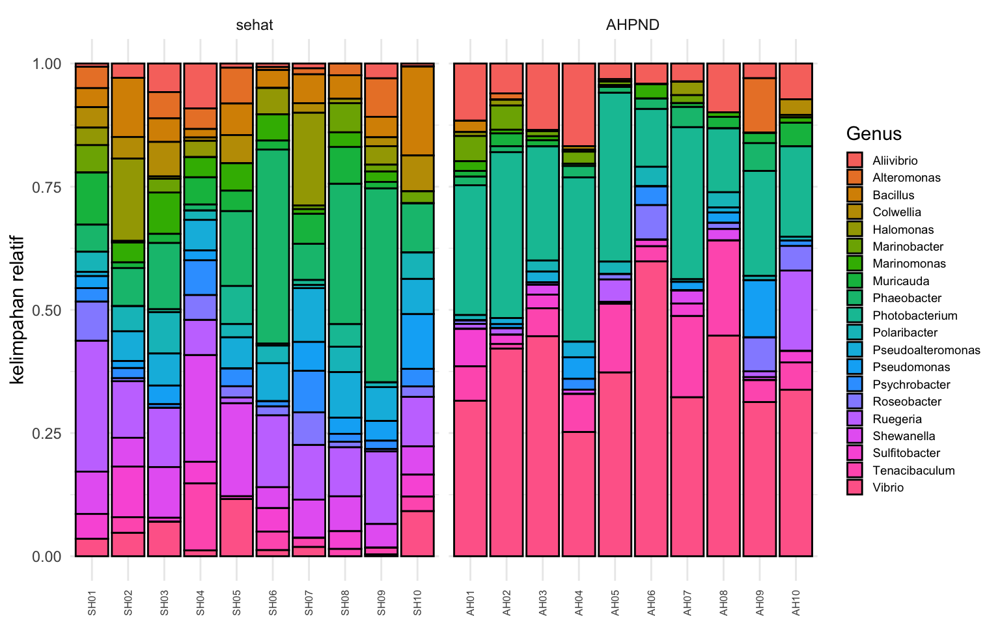
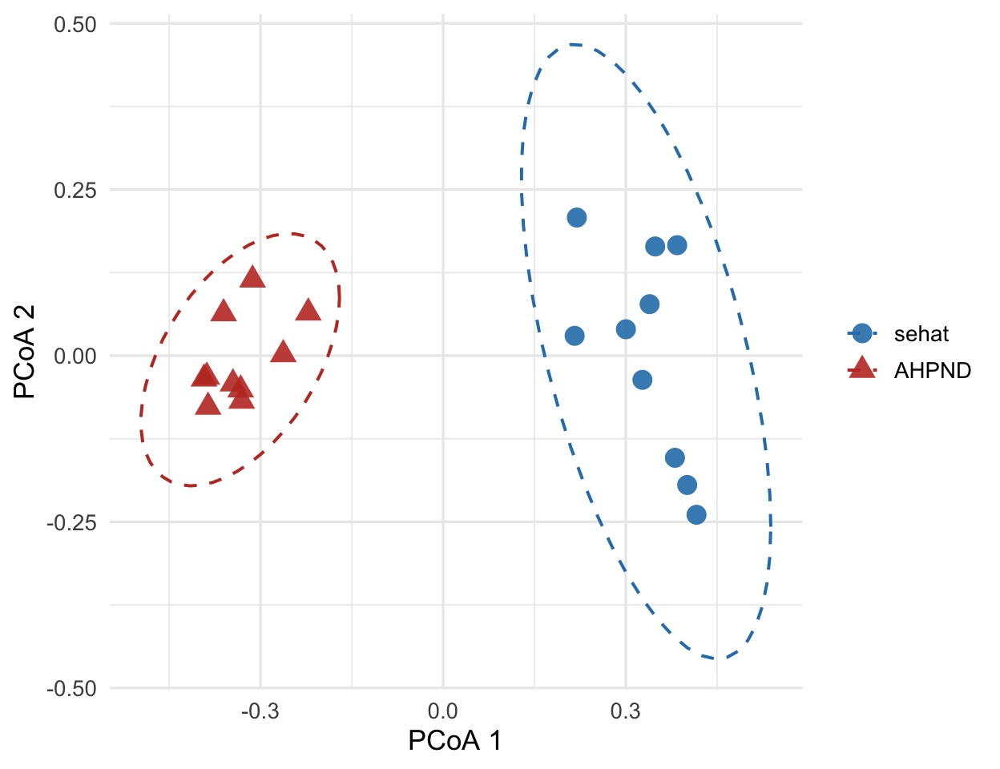

Gen 16S rRNA mengode bagian dari subunit kecil ribosom prokariot. Panjangnya sekitar 1.500 basa dan memuat daerah lestari serta sembilan daerah hipervariabel, V1 sampai V9. Primer PCR menempel pada daerah lestari, sedangkan variasi pada daerah hipervariabel membantu membedakan takson.
Tutorial ini menargetkan V3–V4. Pada eksperimen nyata, pasangan primer 341F/805R menghasilkan amplikon sekitar 460 bp yang sesuai untuk sekuensing paired-end Illumina. Data demo dipersingkat menjadi amplikon 400 bp agar seluruh analisis dapat dijalankan dengan cepat.

Alur metabarcoding 16S, dari sampel usus dan ekstraksi DNA hingga taksonomi serta analisis komunitas mikroba.
Alurnya dimulai dari ekstraksi DNA, amplifikasi V3–V4, lalu sekuensing. Setelah primer dan reads berkualitas rendah dibuang, DADA2 memisahkan kesalahan sekuensing dari variasi biologis dan menghasilkan ASV (amplicon sequence variant). Setiap ASV kemudian dibandingkan dengan basis data referensi untuk menentukan taksonominya.
Metabarcoding 16S hanya membaca satu penanda genetik. Biayanya lebih rendah dan cocok untuk membandingkan komunitas bakteri serta arkea, tetapi biasanya berhenti pada resolusi genus dan tidak mengukur gen fungsional secara langsung. Sebaliknya, shotgun metagenomics membaca seluruh DNA dalam sampel sehingga dapat memberi resolusi dan informasi fungsi yang lebih tinggi, dengan kebutuhan data dan biaya yang juga lebih besar.
Kegunaan dalam akuakultur
Komunitas mikroba usus, air, dan sedimen dapat berubah bersama kondisi inang dan lingkungan budidaya. Metabarcoding 16S membantu membandingkan perubahan tersebut, menyaring kandidat takson yang terkait dengan penyakit, serta menilai respons terhadap pakan atau pengelolaan air.
Namun, data 16S menunjukkan asosiasi, bukan sebab-akibat. Peningkatan suatu genus pada udang sakit belum membuktikan bahwa genus itu menyebabkan penyakit. Kesimpulan biologis tetap memerlukan desain eksperimen, kontrol, pengukuran lingkungan, dan validasi tambahan.
Desain studi dan data
Tutorial ini memakai 20 sampel usus udang vanamei (Litopenaeus vannamei): 10 sampel sehat dan 10 sampel AHPND. Skenario eksperimennya menggunakan primer 341F (5'-CCTACGGGNGGCWGCAG-3') dan 805R (5'-GACTACHVGGGTATCTAATCC-3') dengan sekuensing paired-end. Agar ringan, berkas demo menyimpan read forward 232 basa dan read reverse 236 basa, termasuk primer. Setelah primer dipotong, masing-masing pasangan menyisakan 215 basa dan mempunyai overlap 30 basa pada amplikon 400 bp.
Data ini sintetis dan dibuat dengan code/generate-metabarcoding-16s-demo.R. Komposisi kedua kelompok sengaja dibedakan agar setiap tahap analisis menghasilkan pola yang mudah dibaca. Karena itu, hasil di bawah menjelaskan perilaku pipeline, bukan bukti biologis tentang AHPND. Berkas unduhan tersedia untuk menjalankan ulang tutorial.
Langkah pertama adalah mencocokkan berkas forward dan reverse, mengambil nama sampel, lalu menghitung jumlah reads. Pemeriksaan ini segera menunjukkan berkas yang hilang atau pola nama yang tidak konsisten.
Semua 20 pasangan berkas terbaca. Totalnya 40.086 pasangan, dengan 1.919–2.062 pasangan per sampel dan rata-rata 2.004. Jumlah ini kecil karena data dibuat untuk latihan. Pada studi nyata, kedalaman yang dibutuhkan bergantung pada keragaman komunitas dan tujuan analisis. Penjelasan format FASTQ tersedia pada artikel Mengenal berbagai format file NGS.
Kendali mutu dan pemangkasan primer
Primer PCR harus dibuang sebelum DADA2 mempelajari pola kesalahan. Untuk data nyata, cutadapt dapat mencari primer lengkap, termasuk kode degenerasi IUPAC, lalu memangkasnya. Perintah berikut adalah alternatif dan tidak dijalankan dalam alur utama artikel.
# Pangkas primer IUPAC dari satu pasangan FASTQ dengan cutadapt.cutadapt-g CCTACGGGNGGCWGCAG -G GACTACHVGGGTATCTAATCC \-o trimmed_1.fastq.gz -p trimmed_2.fastq.gz sample_1.fastq.gz sample_2.fastq.gz
Perintah tersebut diuji dengan cutadapt 5.2 pada sampel AH01. Primer terdeteksi pada 99,7% forward reads dan 99,9% reverse reads. Jika hasil cutadapt dipakai sebagai masukan DADA2, jangan memangkas primer lagi dengan trimLeft.
Data demo memiliki primer pada posisi tetap, jadi alur utama memakai trimLeft = c(17, 21). Filter juga menolak reads dengan basa ambigu, membatasi expected error maksimal dua pada tiap arah, dan memotong ekor setelah kualitas turun ke Q2. rm.phix = FALSE dipakai karena data sintetis ini tidak memuat PhiX.
Sebanyak 30.932 dari 40.086 pasangan lolos, setara dengan retensi 77,16%. Retensi per sampel berkisar 75,80–79,17%, sehingga tidak ada satu sampel yang kehilangan reads secara mencolok. Sekitar 23% pasangan tersaring karena generator data sengaja menambahkan profil kualitas rendah. Pada data nyata, kehilangan besar atau tidak merata perlu diperiksa melalui profil kualitas, panjang pemotongan, dan batas maxEE.
Denoising menjadi ASV dengan DADA2
DADA2 mempelajari hubungan antara skor kualitas dan kesalahan, lalu mengoreksi reads menjadi ASV. Setelah forward dan reverse reads diproses terpisah, keduanya digabungkan melalui overlap 30 basa. Tahap terakhir membuang chimera, yaitu artefak PCR yang tersusun dari bagian dua atau lebih sekuens induk.
Pipeline menghasilkan 20 ASV, semuanya sepanjang 400 bp. Angka ini sama dengan jumlah sekuens referensi yang dimasukkan oleh generator data. Kesamaan tersebut adalah hasil rancangan simulasi, bukan tolok ukur yang perlu dicapai pada data nyata.
# Ringkas jumlah reads yang bertahan pada setiap tahap DADA2.getN <-function(x) sum(getUniques(x))track <-cbind(out,denoisedF =sapply(dadaFs, getN),denoisedR =sapply(dadaRs, getN),merged =sapply(merged, getN),nonchim =rowSums(seqtab.nochim))colnames(track)[1:2] <-c("input", "filtered")head(track)
Tahap akhir mempertahankan 30.723 pasangan, atau 76,64% dari input. Sebanyak 99,32% pasangan yang lolos filter mencapai tabel non-chimera. Dalam demo ini tidak ada pasangan tambahan yang hilang saat chimera dibuang. Pada data nyata, tabel pelacakan membantu menemukan apakah kehilangan terbesar terjadi saat filter, denoising, penggabungan, atau pembuangan chimera.
Penugasan taksonomi
assignTaxonomy membandingkan pola k-mer setiap ASV dengan basis data referensi menggunakan pengklasifikasi naive Bayes. Tutorial ini memakai basis data kecil yang dibangun khusus untuk 20 sekuens demo. Analisis nyata memerlukan basis data yang sesuai dengan primer dan organisme target, misalnya SILVA, GTDB, atau RDP.
# Tetapkan taksonomi ASV dengan basis data referensi demo.taxa <-assignTaxonomy(seqtab.nochim,"data/metabarcoding-16s-demo/ref/train_set_demo.fa.gz",taxLevels =c("Kingdom","Phylum","Class","Order","Family","Genus"),minBoot =50, multithread =TRUE)as.data.frame(unname(taxa)) |>setNames(c("Kingdom","Phylum","Class","Order","Family","Genus")) |>head()
Enam ASV pertama ditetapkan sebagai Vibrio, Photobacterium, Phaeobacter, Ruegeria, Tenacibaculum, dan Shewanella. Semua ASV demo mendapat nama genus karena basis datanya dibuat dari sekuens yang sama. Pada data lapangan, sebagian ASV biasanya berhenti pada famili atau orde dan berisi NA pada peringkat yang lebih rendah.
Membangun objek phyloseq
Objek phyloseq menyatukan tabel hitungan, metadata, taksonomi, dan sekuens ASV. Penyatuan ini menjaga nama sampel dan takson tetap selaras pada analisis berikutnya.
# Gabungkan hitungan, metadata, taksonomi, dan sekuens dalam satu objek.suppressMessages({library(phyloseq); library(Biostrings)})meta <-read.csv("data/metabarcoding-16s-demo/metadata.csv", row.names =1)ps <-phyloseq(otu_table(seqtab.nochim, taxa_are_rows =FALSE),sample_data(meta),tax_table(taxa))dna <-DNAStringSet(taxa_names(ps)); names(dna) <-taxa_names(ps)ps <-merge_phyloseq(ps, dna)taxa_names(ps) <-paste0("ASV", seq_len(ntaxa(ps)))sample_data(ps)$group <-factor(sample_data(ps)$group, levels =c("sehat","AHPND"))ps
Ringkasan objek mengonfirmasi adanya 20 takson, 20 sampel, satu variabel metadata, enam peringkat taksonomi, dan 20 sekuens referensi. Objek ps menjadi sumber tunggal untuk visualisasi dan pengujian statistik di bawah.
Analisis komunitas mikroba
Analisis berikut melihat keragaman dalam sampel, kecukupan kedalaman baca, komposisi genus, perbedaan antarsampel, pola kelimpahan, dan genus yang berbeda di antara kelompok. Karena datanya sintetis, pembahasan berfokus pada cara membaca output.
Keragaman alfa dalam sampel
Observed menghitung jumlah ASV yang terdeteksi. Indeks Shannon juga memperhitungkan pemerataan kelimpahan, sehingga nilainya turun ketika sedikit takson mendominasi komunitas.
# Bandingkan kekayaan ASV dan indeks Shannon antar kelompok.plot_richness(ps, x ="group", color ="group",measures =c("Observed","Shannon")) +geom_boxplot(alpha =0.25, outlier.shape =NA) +scale_color_manual(values =c(sehat ="#2c7fb8", AHPND ="#c0392b")) +theme_minimal(base_size =12) +theme(legend.position ="none")
Gambar 1: Indeks Observed dan Shannon pada setiap kelompok dalam data demo.
Kelompok sehat memiliki median 17,5 ASV dan Shannon 2,495. Pada kelompok AHPND, median tersebut turun menjadi 12,5 ASV dan Shannon 1,723. Rentang Shannon kedua kelompok juga tidak bertumpang tindih: 2,136–2,617 pada kelompok sehat dan 1,479–1,981 pada AHPND. Pola kuat ini memang ditanamkan dalam data sintetis.
Peringatan estimate_richness tentang tidak adanya singleton juga perlu diperhatikan. Data demo hanya memuat 20 takson rancangan, sehingga estimasi kekayaannya tidak mewakili komunitas alami. Pada data nyata, hitung keragaman dari tabel yang belum membuang takson berkelimpahan rendah tanpa alasan yang jelas.
# Uji perbedaan indeks Shannon dengan Wilcoxon rank-sum.rich <-estimate_richness(ps, measures =c("Observed","Shannon"))rich$group <-sample_data(ps)$groupwilcox.test(Shannon ~ group, data = rich)
Wilcoxon rank sum exact test
data: Shannon by group
W = 100, p-value = 1.083e-05
alternative hypothesis: true location shift is not equal to 0
Uji Wilcoxon menghasilkan W = 100 dan p = 1,08 × 10^-5. Di bawah hipotesis nol bahwa distribusi Shannon sama pada kedua kelompok, statistik setidaknya se-ekstrem ini jarang muncul. Hasil tersebut mendukung perbedaan pada data demo, tetapi tidak mengubah data sintetis menjadi bukti klinis.
Kurva rarefaction
Kurva rarefaction menunjukkan berapa banyak ASV yang teramati saat jumlah reads bertambah. Kurva yang mulai mendatar menunjukkan bahwa tambahan reads hanya menemukan sedikit ASV baru.
Gambar 2: Kekayaan ASV terhadap jumlah reads yang disubsampel.
Semua kurva mendekati plateau sebelum kedalaman maksimum. Untuk 20 takson yang ditanamkan dalam demo, sekitar 1.500 reads per sampel sudah menangkap sebagian besar kekayaan yang tersedia. Garis AHPND berhenti pada jumlah ASV yang lebih rendah, sesuai dengan komposisi yang sengaja dibuat lebih timpang.
Komposisi taksonomi
ASV diagregasi ke tingkat genus, lalu setiap hitungan dibagi total reads sampelnya. Hasilnya adalah proporsi, bukan jumlah sel absolut.
# Agregasikan ASV ke genus dan ubah hitungan menjadi proporsi per sampel.ps_genus <-tax_glom(ps, taxrank ="Genus", NArm =FALSE)ps_rel <-transform_sample_counts(ps_genus, function(x) x /sum(x))plot_bar(ps_rel, x ="Sample", fill ="Genus") +facet_wrap(~ group, scales ="free_x", nrow =1) +labs(x =NULL, y ="kelimpahan relatif") +theme_minimal(base_size =11) +theme(axis.text.x =element_text(angle =90, vjust =0.5, size =6),legend.key.size =unit(0.35, "cm"), legend.text =element_text(size =7))

Gambar 3: Kelimpahan relatif genus pada setiap sampel demo.
Pada kelompok sehat, rerata proporsi tertinggi berasal dari Phaeobacter (16,8%), Ruegeria (11,9%), dan Shewanella (9,5%). Pada AHPND, Vibrio mencapai 38,3% dan Photobacterium 24,6%, diikuti Tenacibaculum 8,4% dan Aliivibrio 7,9%. Perbedaan ini sesuai dengan parameter generator data dan tidak boleh dibaca sebagai estimasi prevalensi pada populasi udang.
Keragaman beta antarsampel
Jarak Bray–Curtis merangkum perbedaan komposisi antarsampel. PCoA kemudian memproyeksikan jarak tersebut ke dua sumbu agar pola kelompok dapat dilihat.
# Hitung PCoA dan gambar posisi sampel menurut kelompok.ps_relA <-transform_sample_counts(ps, function(x) x /sum(x))ord <-ordinate(ps_relA, method ="PCoA", distance ="bray")ord_df <-as.data.frame(ord$vectors[, 1:2])colnames(ord_df) <-c("PCoA1", "PCoA2")ord_df$group <-factor(as.character(sample_data(ps_relA)$group)[match(rownames(ord_df), sample_names(ps_relA))],levels =c("sehat", "AHPND"))ggplot(ord_df, aes(PCoA1, PCoA2, color = group, shape = group)) +stat_ellipse(type ="norm", linetype =2, linewidth =0.7) +geom_point(size =4, alpha =0.9) +scale_color_manual(values =c(sehat ="#2c7fb8", AHPND ="#c0392b")) +scale_shape_manual(values =c(sehat =16, AHPND =17)) +labs(x ="PCoA 1", y ="PCoA 2") +theme_minimal(base_size =13) +theme(legend.position ="right", legend.title =element_blank())

Gambar 4: PCoA berbasis jarak Bray–Curtis pada kelimpahan relatif.
Titik sehat dan AHPND membentuk dua kelompok yang terpisah pada PCoA. Plot ini menunjukkan pola jarak, tetapi belum menjelaskan apakah pemisahan berasal dari perbedaan pusat kelompok, perbedaan sebaran, atau keduanya.
PERMANOVA menguji hubungan komposisi dengan kelompok. Uji dispersi dijalankan sesudahnya karena PERMANOVA dapat ikut sensitif terhadap perbedaan keragaman jarak di dalam kelompok.
# Uji perbedaan komposisi dan kesamaan dispersi antarkelompok.bc <- phyloseq::distance(ps_relA, method ="bray")set.seed(200)adonis2(bc ~ group, data =data.frame(sample_data(ps_relA)), permutations =999)
Permutation test for adonis under reduced model
Permutation: free
Number of permutations: 999
adonis2(formula = bc ~ group, data = data.frame(sample_data(ps_relA)), permutations = 999)
Df SumOfSqs R2 F Pr(>F)
Model 1 2.2275 0.60938 28.08 0.001 ***
Residual 18 1.4279 0.39062
Total 19 3.6554 1.00000
---
Signif. codes: 0 '***' 0.001 '**' 0.01 '*' 0.05 '.' 0.1 ' ' 1
Permutation test for homogeneity of multivariate dispersions
Permutation: free
Number of permutations: 999
Response: Distances
Df Sum Sq Mean Sq F N.Perm Pr(>F)
Groups 1 0.042228 0.042228 12.838 999 0.002 **
Residuals 18 0.059207 0.003289
---
Signif. codes: 0 '***' 0.001 '**' 0.01 '*' 0.05 '.' 0.1 ' ' 1
PERMANOVA menghasilkan R² = 0,609, F = 28,08, dan p = 0,001. Dalam data demo, kelompok menjelaskan sekitar 60,9% variasi jarak Bray–Curtis. Namun, uji dispersi juga signifikan (F = 12,84; p = 0,002). Artinya, sebaran sampel di dalam kelompok tidak sama dan dapat berkontribusi pada hasil PERMANOVA. Kesimpulan yang aman adalah kedua kelompok demo berbeda dalam struktur komunitas, mencakup posisi dan/atau dispersi; hasil ini tidak boleh ditafsirkan hanya sebagai pergeseran pusat kelompok.
Heatmap kelimpahan
Heatmap menampilkan 15 genus dengan total hitungan terbesar. Sampel dipisah menurut kelompok, sedangkan genus diurutkan menurut total kelimpahan. Kode ini tidak melakukan clustering hierarkis.
# Susun heatmap genus teratas tanpa clustering hierarkis.suppressMessages(library(tidyr))top <-names(sort(taxa_sums(ps_genus), decreasing =TRUE))[1:15]ps_top <-transform_sample_counts(prune_taxa(top, ps_genus), function(x) x /sum(x))mat <-as(otu_table(ps_top), "matrix"); if (!taxa_are_rows(ps_top)) mat <-t(mat)rownames(mat) <-as.character(tax_table(ps_top)[rownames(mat), "Genus"])grp <-as.character(sample_data(ps_top)$group); names(grp) <-sample_names(ps_top)long <-as.data.frame(as.table(mat))colnames(long) <-c("Genus", "Sample", "abundance")long$group <-factor(grp[as.character(long$Sample)], levels =c("sehat","AHPND"))long$Genus <-factor(long$Genus, levels =names(sort(rowSums(mat))))ggplot(long, aes(Sample, Genus, fill = abundance)) +geom_tile(color ="white", linewidth =0.15) +facet_grid(~ group, scales ="free_x", space ="free_x") +scale_fill_gradient(low ="#f7f7f7", high ="#6f42c1", name ="kelimpahan\nrelatif") +labs(x =NULL, y =NULL) +theme_minimal(base_size =11) +theme(axis.text.x =element_blank(), axis.ticks.x =element_blank(),panel.grid =element_blank(), strip.text =element_text(face ="bold"))
Gambar 5: Kelimpahan relatif 15 genus teratas, dipisah menurut kelompok.
Panel AHPND memperlihatkan kelimpahan tinggi Vibrio dan Photobacterium pada hampir semua sampel. Panel sehat lebih menonjolkan Phaeobacter, Ruegeria, dan Shewanella. Heatmap berguna untuk melihat konsistensi pola antarsampel, tetapi intensitas warnanya tetap kelimpahan relatif.
Kelimpahan diferensial dengan DESeq2
DESeq2 memodelkan hitungan genus dengan distribusi binomial negatif. Karena banyak nilai nol, faktor ukuran dihitung memakai geometric mean dari hitungan positif. Kontras AHPND terhadap sehat membuat nilai log2 fold change positif berarti lebih tinggi pada AHPND.
Metode ini praktis untuk demonstrasi, tetapi data mikrobioma bersifat komposisional. Untuk analisis utama pada data nyata, bandingkan hasilnya dengan metode yang dirancang untuk data komposisional, seperti ANCOM-BC atau ALDEx2, dan perhitungkan desain eksperimen serta kovariat yang relevan.
Gambar 6: Genus dengan padj < 0,05 pada perbandingan AHPND terhadap sehat.
Delapan genus memiliki padj < 0,05. Vibrio, Photobacterium, Aliivibrio, dan Tenacibaculum lebih tinggi pada AHPND, sedangkan Bacillus, Shewanella, Phaeobacter, dan Pseudoalteromonas lebih tinggi pada kelompok sehat. Vibrio memiliki log2 fold change = 4,17 dan Photobacterium 5,08. Nilai ini menggambarkan perbedaan yang ditanamkan dalam simulasi; genus tersebut adalah kandidat untuk validasi, bukan penanda penyakit yang telah terbukti.
Hal yang perlu dipertimbangkan
Primer dan daerah target
Setiap pasangan primer mempunyai bias cakupan. Pilih daerah 16S berdasarkan organisme target, panjang baca, dan resolusi yang dibutuhkan. Uji primer secara in silico dan catat versi serta urutannya agar analisis dapat direproduksi.
Jumlah salinan gen 16S
Jumlah salinan gen 16S berbeda antartakson. Kelimpahan relatif reads karena itu tidak sama dengan proporsi sel. Koreksi berbasis basis data jumlah salinan dapat membantu, tetapi juga membawa ketidakpastian baru.
Kontrol negatif dan kontaminasi
Sertakan blanko ekstraksi dan blanko PCR pada setiap batch. Kontaminan reagen dapat mendominasi sampel berbiomassa rendah, sehingga kontrol harus diproses dan dianalisis bersama sampel utama.
Kedalaman sekuensing
Kurva rarefaction membantu memeriksa apakah kekayaan mulai jenuh, tetapi bukan aturan tunggal untuk menentukan kedalaman cukup. Hindari menyamakan kedalaman dengan subsampling tanpa menilai konsekuensi hilangnya data dan tujuan analisis.
Sifat komposisional
Setiap nilai bergantung pada total reads sampel. Kenaikan proporsi satu takson dapat membuat proporsi takson lain turun meski jumlah absolutnya tetap. Gunakan metode yang sesuai untuk data komposisional dan, bila memungkinkan, tambahkan ukuran beban mikroba absolut.
Batas resolusi taksonomi
Amplicon 16S umumnya lebih andal pada tingkat genus daripada spesies atau strain. Jika pertanyaan penelitian memerlukan identifikasi strain, gen virulensi, virus, fungi, atau jalur metabolik, gunakan metode lain seperti shotgun metagenomics.
Penutup
Pipeline ini mengubah 40.086 pasangan raw reads menjadi tabel 20 ASV, menghubungkannya dengan taksonomi dan metadata, lalu membandingkan dua kelompok demo. DADA2 mempertahankan 30.723 pasangan sampai tahap akhir. Analisis lanjutan menemukan Shannon yang lebih rendah pada AHPND, pemisahan Bray–Curtis yang disertai perbedaan dispersi, dan delapan genus dengan kelimpahan berbeda menurut DESeq2.
Hasil tersebut menunjukkan bahwa kode bekerja sesuai rancangan data sintetis. Pada penelitian nyata, kesimpulan harus mempertimbangkan kontrol kontaminasi, struktur desain, variasi dispersi, sifat komposisional, dan validasi biologis. Untuk melihat analisis ekspresi gen inang pada skenario yang sama, lanjutkan ke RNA-Seq workflow.